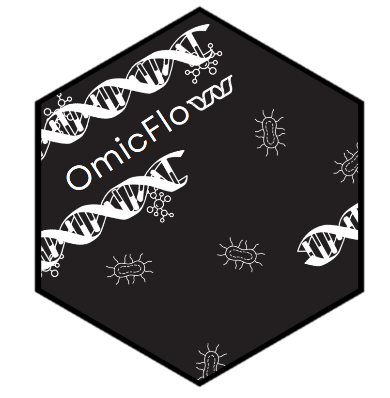

Create a boxplot with jittered points and statistical tests
Source:R/boxjitter_test.R
boxjitter_test.RdVisualizes group differences using a half-boxplot, half-jitter plot with pairwise statistical testing and p-value annotation.
This function is built into the class omics with method alpha_diversity().
Usage
boxjitter_test(
data,
values,
col_name = lifecycle::deprecated(),
groups,
group_by = lifecycle::deprecated(),
split_by = NULL,
palette = NULL,
method = lifecycle::deprecated(),
test = "wilcox",
paired = FALSE,
p.adjust.method = "fdr",
step.increase = 0.05
)Arguments
- data
A data.frame or data.table table.
- values
A column name of a continuous variable in
data.- col_name
![[Deprecated]](figures/lifecycle-deprecated.svg) This argument has been renamed to
This argument has been renamed to groupsfor more clarity.- groups
A column name of a categorical variable in
data.- group_by
- This argument has been renamed to
split_byfor more clarity. - split_by
A column name to split the groups into chunks based on the
datafor grouped statistical testing (default:NULL).- palette
An setNames class with names and values as hexcode or color names, see colormap (default:
NULL).- method
- This argument no longer labels the y-labels, you can accomplish this by adding
+ labs(y = "label")to the returned plot. - test
A character variable indicating what statistical test to apply (default:
"wilcox").- paired
A boolean value to perform paired analysis with row_wilcoxon_paired (default:
FALSE).- p.adjust.method
A character variable to adjust the p-values, see p.adjust (default:
"fdr").- step.increase
A numeric value to create a gap between Y-positions (default":
0.05).
Value
A ggplot2 object to be further modified
Examples
n_row <- 1000
n_col <- 100
density <- 0.2
num_entries <- n_row * n_col
num_nonzero <- round(num_entries * density)
set.seed(123)
positions <- sample(num_entries, num_nonzero, replace=FALSE)
row_idx <- ((positions - 1) %% n_row) + 1
col_idx <- ((positions - 1) %/% n_row) + 1
values <- runif(num_nonzero, min = 0, max = 1)
sparse_mat <- Matrix::sparseMatrix(
i = row_idx,
j = col_idx,
x = values,
dims = c(n_row, n_col)
)
div <- OmicFlow::diversity(
x = sparse_mat,
metric = "shannon"
)
dt <- data.table::data.table(
"shannon" = div,
"treatment" = c(rep("healthy", n_col / 2), rep("tumor", n_col / 2)),
"sex" = c(rep("male", n_col / 4), rep("female", n_col / 4))
)
colors <- OmicFlow::colormap(dt, "treatment")
#> Warning: The `col_name` argument of `colormap()` is deprecated as of OmicFlow 1.7.0.
#> ℹ Please use the `groups` argument instead.
# Comparing two groups
plt <- OmicFlow::boxjitter_test(
data = dt,
values = "shannon",
groups = "treatment",
palette = colors,
test = "wilcox",
paired = FALSE,
p.adjust.method = "fdr"
)
# Performing a test while stratifying the plot in two groups
plt <- OmicFlow::boxjitter_test(
data = dt,
values = "shannon",
groups = "treatment",
split_by = "sex",
palette = colors,
test = "wilcox",
paired = FALSE,
p.adjust.method = "fdr"
)